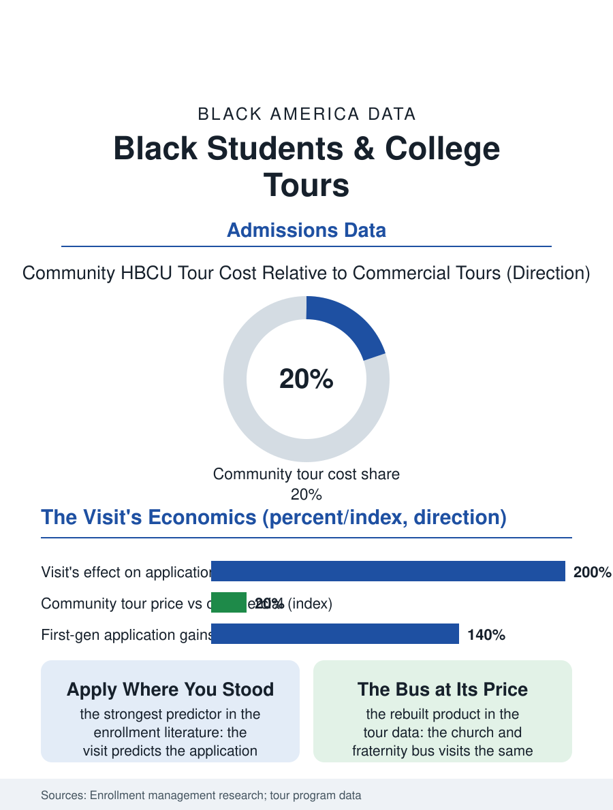

Black Education
Standing in the Yard: Black Students and College Tours
The student applies where she has stood, and the community's bus decides where she stands. The college tour file.

The college tour is the admissions file's pilgrimage, and its Black institution, the HBCU tour, is a tradition of its own: the chartered bus of high school juniors rolling through the Southern campuses each spring, an industry of churches, fraternities, and tour companies whose product is the visible possibility, the student standing in the yard of a campus where the president and the homecoming queen share her name and her grandmother's. This article reads the college tour file.
The Bus and the Yard
The tour's economics begin with the family's: the commercial college tour, the multi-campus circuit sold to the affluent school and family, prices in the thousands per student, while the community tour, the church's and the Divine Nine chapter's chartered bus, prices in the hundreds, subsidized by the congregation's budget and the alumni's dues, the same campuses visited on a different balance sheet, in the pattern of every institution in this atlas where the community rebuilt the market's product at its own price. The HBCU circuit's distinctiveness is its curriculum: the tour is a recruitment instrument for the campuses and a cultural one for the students, the yard's life, the probate show's calendar and the band's practice audible from the tour's path, constituting an argument no brochure's statistics make, the belonging file's evidence delivered at walking pace. The predominantly white institutions' tours have their own file in the students' accounts, the visit's choreography and the overnight's pairing deciding the application's fate in the enrollment literature's consistent finding that the visit is the strongest predictor of the application and the matriculation both, which makes the visit's access a pipeline variable in itself. The alumni's role in the yard deserves the file's line, because the tour's most persuasive hour is rarely the admissions office's: it is the graduate of the student's own high school, three years ahead and at home in the place, whose existence converts the campus from the brochure's proposition into the lineage's next step, and the tour organizers who staff that hour deliberately are practicing the pipeline's oldest technology, the visible successor.
The Visit's Absence
The virtual era redrew the tour's access map before redrawing it back: the pandemic's virtual visit democratized the information and thinned the experience, the enrollment data showing the application effects concentrated where the student could not have traveled, a genuine widening, while the yield effects, the visited student's conversion, held for the physical visit in the cycles after, so that the tour's two components, the information and the standing-in-the-yard, now price separately in the file's analysis, the first nearly free and the second still rationed by the bus's fare and the family's weekend. The school-sponsored tour is the public's instrument, the district that charters the bus for its juniors converting the visit from the family's purchase to the curriculum's field trip, its participation data showing the first-generation student's application map expanding in the visited directions, the local and regional campuses' applications rising on the route the bus actually drove, a finding the tour companies' itineraries quietly confirm.
Standing in the Yard
The college tour file closes on the tour's product, which the enrollment data measure as the application's geography: the student applies where she has stood, and the map of where the Black student has stood is drawn by the bus routes of the community's institutions and the family's resources, so that the application's map, and behind it the enrollment's, carries the tour's signature into the admissions file's every other variable. The programs that fund the standing, the tour scholarships and the district charters and the campuses' own fly-in programs for the admitted, are the file's policy tier, their cost per converted application being among the cheapest figures in the recruitment literature. The associations count the tours each spring. The file's last entry is the junior at the campus's gate at the tour's first morning, the yard waking up around the band's first notes, in the hour before the admissions office's presentation, when the argument the whole apparatus exists to make is made by the place itself, to the student who, the data say, will apply where she has stood, and who is standing, for the first time, in a yard that was built for her.
More in Black Education
Black Educational Attainment: High School Parity, the College Gap
About 89 percent of Black adults hold a high school diploma and one in four holds a bachelor's degree or higher — the attainment ladder, the college completion gap, and the generational trend.
Historically Black Colleges and Universities: Enrollment and Degrees
More than 100 HBCUs enroll roughly 290,000 students and award about one in six Black bachelor's degrees — an outsized share from a small sector. The federal education data.
Black College Enrollment: 2.4 Million Students
About 2.4 million Black students are enrolled in American colleges — nearly two-thirds of them women. The NCES enrollment data by sector, level, and trend.
Source: Enrollment management and campus visit research; HBCU tour program and fly-in program data.